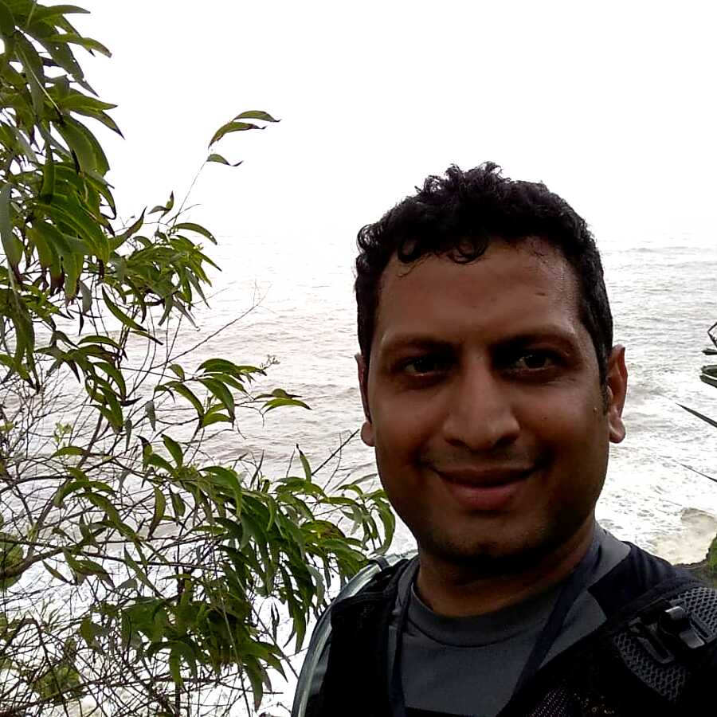

Doctoral Degree
University of Twente, Netherlands
Ph.D. (2008), thesis: Phase separation in complex fluids: A molecular viewpoint.
Research | Teaching | Simulation
Scientist, engineer, and educator focused on multiphase flows, computational modeling, and high-impact teaching.
amolthakre.in@gmail.com +91-9591233320 CV (PDF) Join Mid-March Batch

Doctoral Degree
Ph.D. (2008), thesis: Phase separation in complex fluids: A molecular viewpoint.
Postgraduate Degree
Masters (Chemical Engg.) (2003), thesis: Phase inversion in liquid-liquid dispersions.
Combines research depth, industrial R&D execution, and classroom leadership. Work spans molecular-to-continuum modeling and applied engineering analytics.
Industry R&D
Production optimization and digital twins for multi-well systems, including flow-assurance and artificial-lift modules.
Led slug-risk prediction and slug-catcher strategy work using CFD and reduced-order models.
Energy Research
Subsea separation and flow-assurance studies for heavy-oil assets under cold deep-water conditions.
Designed and supervised heavy-oil rig experiments and translated outcomes to field-facing design recommendations.
Applied Research
Thermal process and transport modeling in food and process systems, including microwave/radio-frequency heating studies.
Teaching
10+2/JEE/NEET coaching with concept-first and exam-performance focus.
Flow Assurance & Separation
Worked on risk analysis for heavy-oil flow assurance and separation-system design for challenging offshore conditions.
Evaluated deployment options including electrostatic coalescers, foam-breaker approaches, heat treatment, and diluent strategies.
Digital Production Systems
Contributed to development of fluid-property and well-level digital twin modules for production optimization across assets.
Supported architecture for integrated nodal-analysis workflows and operational optimization constraints.
Concept clarity, mathematical discipline, structured problem solving, and timed execution.
Experience
Teaching Method
Assessment System
Mentorship
Class Mix
Student Outcomes
Learning Model
Admissions
Weekday and weekend slots available with limited seats.